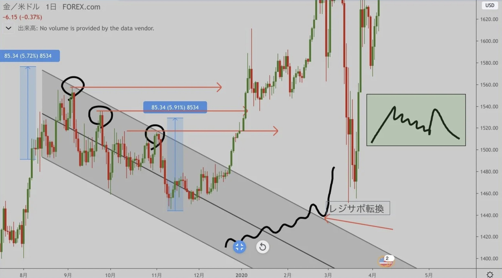

ローソク足の分析

-------------------------ローソク足から読み取るレジサポの位置-------------------------
ローソク足の髭先、髭と実体の間(つまり始値や終値です)に、水平線を引くことで正確かつスピーディーにレジサポの把握ができます。
もちろんそこでの反発回数が多い程、強固なレジサポなので、出来るだけ髭先や実体が揃っている場所が好ましいです。この方法は自分がトレードしている時間軸を大体12倍すると丁度いいです。 (例)5分足なら1hに引く 但しスイングトレードなどかなり時間軸が長いトレードは週足や3日足くらいで良いです。
私の場合スキャルピングからデイトレードの時間軸が多いので、水平を見るメインは4hや日足で見てます
画像を貼ります↓
メリットはこうする事で短期のポジションを上位足の硬いレジサポで構築することができます。
上位足ほど強固なレジサポが構築されるので自分が普段見ているよりも上位の足のレジサポでポジションを構築すると、損切りされる確率が小さくなります。
暴騰暴落時に上位足に予め水平を引いておく事で、止まる可能性が高い位置を認識できるのも良い点です
・ミスプライス
少しミスプライスの話をします。この引き方の本質的な部分だと思います。
ミスプライスとは名前の通り不適切な価格という事です。
適正価格=ローソク足実体部分
ミスプライス=髭です
画像を貼ります。↓
よく見かけるチャートだと思います。
この場合、髭で取れてるポジションに関しては神ポジです。ですが、次の画像を見てください。
こういうチャートもよく見かけると思います。
いわゆる髭を埋めてくる動き。
こうなってしまうと神ポジもゴミポジに早変わりです。
この段階でローソク足実体ベースで安値の切り下げが始まってます。
つまりもうこの価格帯で支えられる可能性はかなり低くなってるわけです。
適正価格自体が下がってきているので。(ロングベースの話をしていますが、逆も然りです)
セオリーでは髭先の安値を更新するまでロングを投げない方が多いと思いますが、私はこの段階で既に売ります。逆に言えば、もしショートしたいと思っていてもこういう状況にならなければ売りません。
ヒゲ連発は消耗するので。
簡潔に言うと髭を埋めにくるムーブは即ポジションをフラットにするか持ち替えたほうがいいです。
オーバーシュートで歪んだ部分の価格が歪まずに落ちてきていると言う事なので。
少しでもローソク足の見方が変わると幸いです。
後半の説明でも使うので必ず頭に入れておいてください。
では次の項目に行きます。
------------------------------------ローソク足の強弱------------------------------------
ローソク足の強弱を読み取るのは非常に大切です。
例えば私は、本来エントリーしたい場所に到達してもローソク足の強弱を確認してからエントリーします
ここではロングする場合の単体のローソク足を例に上げてみます。
もちろんショートの場合はこの真逆のことを考えれば良いだけです。
緑色で色つけされてるローソク単体の話です。
白いローソクは見易さのために置いています。
①大陽線
このローソク足はこのローソク足内での逆張りは一切しません。何故なら、このローソク足を陰転させられる可能性は限りなく低く、連続大陽線を作られると損切りになりますし、スプレッドが開いたり板が無くなって自分が想定してるより大きな幅で損切りする可能性が高いからです。
②中陽線
陽線の中のモブです。じわ上げの踊り場や、下げトレンド中のリバ等、わりとどこでも現れます。エントリーの指標にはなりません。
③前回陰線を包む陽線
ショートは無い。ロングです。転換点で多く見られます。安値圏や押し目圏で出現すると結構鉄板です。
④上下髭中ピンバー陽線
何もできません。特にこの足が上位足(日足や4h以上の足)で出現している場合、ポジションを持ってはいけません。
自分はこの足が1〜4h程度の時間軸4本以上連続して出現するとポジションを撤収します。理由はトレンドレスのクソレンジなので。
⑤下髭陽線
底打ちっぽい雰囲気です。
自分の想定していたロングエントリーの位置かつ、このローソクが出ると高確率でロングします。また、このローソク足の前回が陰線であり、その陰線が大きければ大きいほど値幅が狙えるので好きです。
また、連続した中陰線で下げてきてこのローソク足が出現した場合、リバーサルの初動になるケースも多いです。 前回の陰線が大きければより良い理由は、輪ゴムを引っ張って離すと、引っ張った分だけ反発します。イメージはそんな感じです。 恐らくショート決済と新規のロングが入ってくるからだと解釈していますが、理由は深く考えなくても良いです。目的はお金を増やす事なので。
⑥ピンバー強陽線
強いですが、下髭でキャッチ出来ていないと消耗します。本質的にはピンバーなので次のローソク足が更新された時に陽線なら反転気配あり。陰線ならレンジ継続の可能性が高いです。
こういう陽線が出た場合、左肩対右肩のレンジの長さが1対1になる場合がほとんどなので、自分は髭でポジションを取れていない場合、新規でポジるのを控える足です。
⑦売り押し目の陽線
モブです。この子は下降トレンドの中で出現する何の変哲もないモブです。 次の足更新と同時にショートすると儲かる場合が多いです。 但し安値圏の場合は見送り。
ローソク足単体のお話は以上です。次に行きます。
--------------------------------プライスアクション解説---------------------------------
見てもらった方が早いと思うので画像を貼りますね。↓
ロングバージョンとショートバージョンは、陰陽反転させただけなのでロングの方で解説します。
(ショートバージョンの解説も真逆なだけなので割愛します。)
①大陽線
さっきも書いたので割愛しますが、逆らうと死にます。
ちなみに、この終点がリバーサルハイになって倍戻しするのがライトセーバーです。
②安値圏でのピンバー
そこそこ信用している反転シグナルです。ですが、ピンバーが連続して出現する為、ポジション構築と損切り判断が難しいです。髭先付近でポジションを作っていない場合消耗します。
下髭は長ければ長い程安心出来ます。また、ピンバー強陽線が来る前の左肩部分になる可能性もあるので、背は広めに取る必要があります。
③安値圏での下髭陽線
ダブルボトムの最初のアタックやトリプルボトムの左肩に多く見られます。 注意すべきなのはダブルボトムの場合2回目のアタックで狼狽しない事。また、トリプルボトムの場合今から安値を少し更新するので1度損切りになる可能性もある事です。下髭が長く、実体部分も長い方が強いです。
※稀にシングルボトムの初動になる場合があります
④リバーサルロー
最強です。ほぼ安値が確定します。
安値圏でこの動きが来たときに浅い戻り売りをするとめちゃくちゃ焼けます。 特に4hや日足を、この形で確定させに来てる時はある程度適当にロングしても儲かります。後出しでも儲かる一番簡単な動きです。
⑤一定の価格以下下髭
安値圏ピンバーの亜種です。
実体の確定位置が揃います。確定時間付近でその価格帯への回帰方向順張りが鉄板、そのままブレイクすると尚美味しいです。髭を作る速度が速ければ速いほど安心感があります。逆に髭部分を実体で埋めてきだしたらロングできなくなります。
⑥無限スラストアップ
何があっても無限に安値を切り上げていくやつです。
指数為替のトレンド相場に多いです。大して押し目を作らない為、板取引の場合は高ロットで後乗りすることが難しいです。なので軽いレンジ突入を待つか、切り上げにトレンドラインを引いて順張りするか、スラストアップの最後に出易いリバーサルハイを狙ったショートを打つかの3択になります。自分はレンジ突入を待つのとリバーサルハイ狙いしかやりません。
※画像はリバーサルハイ狙い
⑦上髭埋めムーブ
打ち込みで付けたスパイクハイの髭を実体で埋めながら高値を更新するムーブです。
出来高が減少しているチャートに多く、高安以外のポジションは消耗し易いです。
自分はロングを持っていた場合、実体のレジスタンスで部分利確、髭埋め完了で全利確、その後押し目買い戦略になります。逆にショートを持っていた場合、髭に実体を突っ込ませて確定した段階で即利確です
では次の項目に行きます。
-------------------------チャート形状(チャートパターン)解説---------------------------
これまでに一度は、おそらくどこかのサイトや、トレードの本を見てチャートパターンをある程度知ってると思うのですが、実際それ通りに動いたことはありますか？
また、教科書通りの形で出現してくることなんかほぼ無いと思います。
なので線チャートから具体例を挙げて解説していこうと思います。
当たり前の事ですが、チャートパターンは時間足が大きな物ほど、ブレイク後の値幅は伸びます。
線チャート→実際のチャートで解説の順にするのでよろしくお願いします。↓
いつも通り上昇パターンで説明しますが反転させれば下落パターンです。
チャートは分解すると複雑なものではなく、フラクタル構造同士の組み合わせで形成されているので、
1つ1つの形を考えるよりも組み合わせで派生する形を想定することが大切です。
それも踏まえてフラッグから順番に解説していきます。
・フラッグ
読んで字の如く形が旗っぽいのでフラッグらしいです。

これはゴールドの日足で出現したフラッグです。
基本的に同一角度での高安値の切り下げや、その上限ラインをブレイクで成立ですが、注意点があります
- 1、フラッグの揉み合い幅以上の値幅を欲張って狙わない事
- 2、画像下の方に表記しているレジサポ転換でエントリーする事
この2点は必ず守って下さい。
状況的にまだ伸びると判断した場合でも部分利確はした方が良いです。
フラッグは比較的わかり易いチャートパターンですが、旗部分の下落角度が急すぎる場合、戻り売り優勢と判断され、画像右上のようにダブルトップに派生する可能性もあります。理想は下落角が25~30°です。
これ以上の下落角度のチャネルムーブで下げている場合は高値を超えられない可能性を想定してください
・ウェッジ、アダムイブ
高値圏でのウェッジは上昇継続、安値圏でのウェッジはボトム形成につながるので複合的に解説します。
まずは三角収束系のチャートパターンは三角形の高さの部分だけは最低ブレイク後に値幅が伸びるケースが多く、謙虚利確のポイントである事を頭に入れておいて下さい。
エントリーのやり方的にはほとんどフラッグと変わりません。また、安値の更新値幅もフラッグより浅くなってくるので難易度は低いです。こちらも同じく25~30°の上限の切り下げが好ましいです。
先端の方向に対して逆方向にブレイクする可能性が60%と言われてますが、これは理想の角度ありきの話なので注意してください。
この画像は安値圏でのウェッジです。
ウェッジ単体での利確ポイントは高さ分でちょうど良いのです。
しかしこのウェッジブレイクがアダムイブの2番底形成からのブレイクにつながっている可能性があります
ここをブレイクしたと仮定すると全体的にどういうチャート形状になるか、また、失敗したらどのようなチャート形状になるかを想定する癖をつけて下さい。
アダムイブはボトム形成のチャートパターンで、基本的には下落からV字回復→それより時間をかけた下落→V字回復→ネックブレイクor失敗の流れです。
アダムイブのtpはネックブレイクからボトム分の値幅でtpが好ましいので、先ほどのウェッジブレイクのtpを時間軸によって調整すべきです。スキャ勢ならウェッジ分のtpで離脱、デイ~スイング勢ならアダムイブのネックまで持つ等。基本的にアダムイブは2番底形成のムーブなので
- 1番底の安値を更新しない事
- 2番底形成で上昇しても、ネック付近で明確に折れたら利確(1h以上でのリバーサルハイ等)する事
この2点は最低意識して下さい。
・アセトラ
安値を切り上げ、高値が一定の三角系パターン。
逆はディセトラです。
教科書通りの戦略だとこうなりますが、自分の場合、分かりやすくアセトラを作った時ほど上位足を警戒し、逆張りを狙います(ロングも短めに取ってます)。高値が実体ベースで分かりやすく揃ってるほど強く、騙しが多くなります。一見矛盾しているようですが整合性がある動きをします。
トレンドの順方向の場合は上抜けすると割と鉄板で値幅がもらえます。
が、転換するかも知れないないし完全にトレンドに逆張りの位置で出現した場合は注意が必要です。
当たり前の話ですが、綺麗なチャートパターンほど素人がイナゴしてきます。
なのでそこに大口が仕掛けてくることが多いです。↓

めちゃくちゃ綺麗なアセトラですが、
中長期目線で見ると三尊右肩トップの最高の売り場です。
必ず分かりやすいチャートパターン程騙しの動きが来る想定を、 また、それに乗る準備をしましょう
・三角持ち合い
これも三角系のチャートパターンなので基本的には三角の高さ分で利確すれば良いです。
高値も安値も均等に切り上げ切り下げしてくるので、このチャートパターンを単体で見たときに、ウェッジやアセトラと違い、どっちに抜けるか当てるのが難しいです。
エントリーは基本的にはブレイク後レジサポ転換を確認して順張りで良いです。
高安どちらも収縮して値幅が狭まってくるので角度でLSどちらのポジション優位性があるかも分かりづらいです。が、出てくる場所の環境を考えその順方向にポジションを持つ事で意外と簡単に値幅が抜けます
これは結果的に見れば上抜けしてますね。
ここに周辺のローソクの環境認識を加えてやるだけで上に行く可能性が高そうだなと判断できます。
大局は逆三尊の右肩になる可能性が高い位置です。
このブレイクアウトが成功すれば、自分は逆三尊トップからのボトムの値幅で計算してそこで全利確する事が多いです。(逆三尊はまだ説明して無いですが知ってると思うのですみません。)
このまま逆三尊の説明に移りますね。
・逆三尊
いわゆる三点底です。
逆三尊には左肩、トップ、右肩この3フェーズがあります。
基本的にエッジがある位置で握るためにはトップの先端付近かつ左肩のトップよりも低い位置または右肩のトップでポジション形成するべきです。↓
3本水平線が引いてあると思いますが、真ん中の水平線が左肩のトップに位置します。
つまり実際エントリーするときは、逆三尊が出来てから買うのではなく、ここで反発したら逆三尊になるであろう位置で買えという事です。画像上部に手描きの線チャートがありますが、利確目標の図示です。
よく言われてるのはネックラインを抜けた押し目で買えと言われがちですが超遅いです。
右肩のトップで買えずネックが抜けた押し目で買うのはベストなエントリーポイントでは無いです。
少し補足します。
ネックラインがぴったり水平に揃ったチャートなんて無いですよね(ほぼ)。
この場合上値を抑えているネックライン(右下がり矢印)が右肩下がりなので、拾う位置も右下がりに同じ値幅分だけ下げます。そこまでこない時も沢山ありますが、自分の中で右下がりだからここまで落ちてきても大丈夫と思えるだけで狼狽しなくなります。
これに逆三尊のトップは割らないという条件は必ず足しておいてください。(当たり前)
・ダブルボトム
これは超簡単です。
1発目につけたスパイクローを2回目のアタックで割らなかったらロングです。
但し
- 実体ベースでゆっくり降ってくる場合
- 1発目の強いリバが真上にあるレジスタンスに明確に弾かれた場合
この場合、ただの売り押し目で続落の可能性が高いので様子見またはロットを落としたロングという判断になります。画像を貼ります↓
これは大底(まだ掘る可能性はある)の時のビットコインの2番底です。
前半で記述したように実体ベースのサポートで強いプライスアクションで反転しています。
こういうところでも安全に拾えるので是非試してみてくださいね。
ちなみに補足というか豆知識レベルですが、ダブルボトムを付けた後の下降トレンドラインへのリターンムーブ成功で逆三尊になります。
・おじいちゃんチャート
これは動いた分の3~4割程V字回復→何かしらのチャートパターン→全戻しのパターンです。
最高のエントリーはもちろん髭先を取れる事ですが、大体無理です。ですが、簡単な取り方があります。
V字回復の後の何かしらのチャートパターン形成の部分でポジションを持ちます。
この場合短期逆三尊のロングをおじいちゃん完成に繋げます。
経験上、この踊り場部分はアセトラ、三角持ち合い、逆三尊が多いです。
分かりにくい形になっているなら見送ってください。
これは自分がルール化してる部分の画像です。これを守ってたら大体取れます。
ちなみにこの場合の損切りも簡単で踊り場部分のチャートパターンが否定されれば切れば良いだけです。
こうする事で短期のチャートパターンの損切り幅で上位足のリワードが狙えます。
・カップアンドハンドル
カップとその持ち手の形に似ているからカップアンドハンドルと言うらしいです。(どうでも良いですね。)
これも教科書によく出てくると思うのですが、全然具体化されて無いことが殆どです。
大まかな流れは、左肩レンジ→安値圏レンジ→ブレイクアウト→右肩レンジ→ブレイクアウトです。
まずカップアンドハンドルが出来る前提条件として、垂直気味の下落その後レンジを組むわけですが、このレンジ部分が長く平らである必要があります。かつ左肩の安値と安値レンジのトップ部分に値幅があればあるほど成立時にポジションを伸ばせます。逆にここに値幅があまり無ければ線チャートの画像に載せている様な不完全なダブルボトムの様な形を形成し、そこからレンジを組む事が多いのでノーポジ推奨のチャートパターンになります。
エントリーポイントは、安値圏レンジのブレイクアウトロングを左肩トップ付近まで。
その後、右肩安値からのロングを、カップの底から両肩の高さ分取りにいきます。
逆三尊のトップ部分がカップの底部分になることもしばしばあるので上位足での環境認識が必要です。
これも逆三尊同様、どのパターンも共通して言える事ですが、肩の高値が切り下がったら拾う安値を同じ値幅分切り下げてください。逆に切り上がったなら拾う場所を切り上げてくれれば良いです。
・ダイヤモンドフォーメーション
垂直の動き以外全く美味しくないチャートパターンです。
自分はこれのブレイクアウトはほぼ取れませんし、一切狙いません。
左肩レンジ→垂直の上下ムーブ→大体中央まで回帰→右肩レンジ→高安のブレイクアウト→ブレイク方向にトレンド発生の流れです。ダイヤモンドフォーメーションで一番美味しいところは上下の垂直スパイクです。例をあげます。↓
先ほどアセトラの解説で分かりやすいチャートパターン程気を付けろと言いましたが、そのブレイクからのダマシ下落後に多いです。
図解するとイメージが湧きやすいと思います。
ダイヤモンドフォーメーションの頂点はリバーサルハイや、強陰線ピンバーになりがちなのでそこでショートを打ち込み、ライトセーバー部分だけ貰って即撤収します。
その後アセトラレンジ部分が左肩になり、レンジ中央圏まで回帰し、右肩レンジ→ブレイクアウト。
調整時間も左肩≒右肩なので中央まで戻ったらノーポジ推奨です。
・上げ全戻しダブルボトム
ダイヤモンドフォーメーションに次いで面倒なチャートパターンです。
天井圏、安値圏どちらでも出現します。
とりあえず最初左肩のレンジからの下降ブレイクはここまで読んでくれた方なら誰でも取れるはずです。
問題はその後です。 上げた分高速全戻しの2番底です。
このパターンでの立ち回りは、下落後のスパイクローの先端を背にするしか無いです。
この時点で髭先でロングを取れてないとエッジが無いので自分は厚くロットを張れません。
狼狽レンジが始まるのでslとtpだけ入れてチャートを見ないのが狼狽しないコツです。
そして、左肩≒右肩時間の狼狽レンジからじわ上げが始まり、垂直全戻し前のレンジ安値付近まで上昇するとまた揉みます。自分は大体ここで全利確します。
上抜けする確率と下抜けする確率は半々位なので謙虚利確推奨です。
一応図解では正確なtpも表記してます。が、これに関しては特にポジらなくて良いと思ってます。
以下おまけ↓
ここまでは歪んだカップアンドハンドルなんですよね。
こういう所で分解してチャートを見れているかどうかで損切り速度が変わります。
自分はここのショートは取れないショートですが、カップアンドハンドルの右肩安値割れでの損切りは出来ますから。こういう細かい組み合わせも見逃さない様に注意してくださいね。
・三尊もどき持ち合い
三尊の様な形を耐えて無理やり三角系の形を作ってその後どちらかにブレイクしていくパターンです。
高値圏でも安値圏でも出現します。
画像を貼ります。↓
この様な面倒なチャートパターンです。
大前提として、三尊ネックになりうる位置付近での反発が強い時点で、右肩形成狙いのショートを入ったとしてもこのパターンになると思ってショートして下さい。最初は難しいと思いますが、慣れたら確実に出来ます。強弱判定は序盤のローソク足の話での判断になります。
ここでの立ち回りですが、三尊右肩からネックを高さとした三角系のチャートパターンに従ってトレードして下さい。こうなった時点で三尊では無いので脳内から三尊を消して三角で見て下さい。
そうするとセオリー通りに上手く値幅が抜けます。
ここまでで、チャートパターン編は終わりです。
ややこしく見えるチャートも大した事ないパターンの連続で形成されてる事、分解して考えれば値幅を抜ける場所は無数にある事が伝わったと思います。
次の項目に移ります。
-----------------------ローソク足更新タイミングでのエントリー------------------------
ローソク足更新タイミングでのエントリー？？ってなると思います。
でもこれが出来るだけで上下当ての精度がめちゃくちゃ変わります。
つまり勝率が上がります。けどかなり難しいです。
良く言われてるのは、東京時間の上昇は順張りしてロンドン時間やニューヨーク時間でショートを積むとかですけど、それで勝てたら苦労しませんから。
簡単に場合分けすると、自分が軸にしている時間足より上位の足の色に順張りするパターンと、逆張りでその転換点を狙っていくパターンの2種類があります。
1項目ずつ噛み砕いて解説しますね。
注意点ですが、どの時間軸でも使えますが、板取引の場合はロット数に制限がかかるので捌きやすい4hをお勧めします。 スプレッド方式だとどこでもやれます。
1.自分が軸にしている時間足より上位の足の色に順張りするパターン
例えば日足が陽線なら日足の始値を背にロングを積んでいったり、今回の4hが陽線なら確定した瞬間の始値を背に次の4hの始値でロングといったパターンです。
これは中期トレンドが出てる相場でめちゃくちゃ勝てます。
後々背にされるであろう始値でエントリーする訳ですから。
大きな時間足の初動ほど旨味があります。しかし、週足や月足更新の動きになってくると、週足レベルの下髭や上髭を作りに行く動きになるので、日足以下で実行した方が効果的です。
分かりにくいと思うので図解しますね。↓
左が4hその内部の波を図示した線チャート、右がこの日の日足です。
日足大陽線気味、この時点で日足更新までショートは打ちたくないですよね。
ではこの状況で4時間足更新が行われ、更新初動で陽線をつけた場合↓
超初動です。更新から2分くらいのイメージです。
さっきまで揉んでいた価格帯の実体レジスタンスのブレイクかつ、下位足を見ている勢の三角持ち合いブレイクロングとショート決済が飛んでくる可能性が高いです。
そうすると↓
成功すれば値幅がかなり抜けますし、失敗しても始値を背にしているので割れたら損切りすれば良いだけです。RRで計算すると5は軽く超えます。
逆に、失敗でも儲かるパターンは↓
上髭作って逆噴射。ダイヤモンドフォーメーションやダブルトップ形成の初動です。
これは更新タイミングで逆張りを狙うパターンですが流れで説明した方が分かり易いと思うのでフライングです。上位足の更新タイミングほど初動が美味しいというが伝わってきたと思います。
基本的に順張りですが、崩れるかもしれないという想定が大切です。
これはチャートパターンの部分で説明しましたが徐々に繋がってきたかなと思います。
これは4hで解説していますが、どれだけ細かい足でもやる事は同じです。
同じなのに何故4hに焦点を当てているのかという事ですが、同時に更新される足が多いんですよ。
当たり前ですが、色々な時間軸のトレーダー達が順方向にポジションを作ってくる可能性が高いんです。
なので値幅が生まれやすいです。ボラがあれば下手くそでも突っ込み即利確だけしてれば勝てますよね？
理解してればもっと利益が残りますし、上手い人だとすごく難易度が低く値幅を抜ける時間になります。
これに付随して伝える事は、例えば
n時14分に中期目線のロング位置かつ少し短期もロングしたい形になっているとしましょう。
でも15分足が陰線の状況。
でも1分から5分は一旦リバりそうな状況って結構ありますよね。
後1分待ってもし15分での初動が陽線なら反転する確率は上がりますよね。
逆に陰線をつけてくると髭埋めムーブになるのでポジらなくて良いですよね。
元々買いたい計画を立ててたけど弱くてまだ買えないという判断の元ノーポジですよね。
中期の押し目の位置でも短期の陰線の中でロングを取ると消耗しますし、狼狽する可能性も上がりますよね。 でも更新の始値を狙えばストレスなく儲かるんですよ。
なのでこの方法を軸に反転やチャートパターンの端っこを狙って下さい。
2.逆張りで転換点を狙う場合
これが一般的なログボと呼ばれるやつです。
さっきも書きましたがこの時間帯が取りやすいだけで、どの時間軸でも発生します。
誰でも狙える位置だと、日足更新や12h更新付近で有効。
パターンとしては、日足更新や12h更新まで上昇下落してきたローソクに対して更新と同時にカウンターを当てるパターン。または、更新してからの動きに対して逆張りする方法の2種類です。
更新と同時にカウンターを当てるパターンの例↓
9時までに上昇してきたローソクに対してチャートパターンとローソク足を確認してブレイク狙いの順張りです。失敗しても利確すれば良いだけなので簡単ですよね。
ウェッジ上限下限や、逆三尊三尊の右肩トップまで攻めてきている状態だと非常に有効です。
更新してからの動きに逆張りをぶつけるパターンの例↓
更新と同時に勢いをつけて逆噴射するパターン。よく見かけると思います。
9時2分くらいまでは陽線を維持するケースが多いです。
どの道、髭先で売れてなくても日足や12hが陰転するタイミングで売れば日足レベルの初動に乗れます。
きっちり走ればロンドン時間開始くらいまで握れますし、走らなかったら謙虚に利確すれば良いだけです。また損切りも明確で日足レベルでローソクの色を戻したら捌けば良いです。
更新タイミングポジについて、自分がエントリーしない形も描いておきます。↓
この図は大袈裟ですが、上下明らかにトレンドが出てない時。
これはどうせレンジ内に押し込まれる可能性が高いので触らない方がいいです。
(月初は月次作るために反射神経で狙ったりもしますが)
最後の項目に移ろうと思います。
------------------------------全部の項目を複合的に考える-------------------------------
ここより上の項目全てを複合的に考えてエントリーを決めます。
逆に言えばこの中で3つか4つ以上条件を満たしているところだけエントリーします。
条件
- 1.ローソク足のレジサポの位置
- 2.ローソク足の強弱
- 3.プライスアクション
- 4.チャートパターン
- 5.ローソク足更新タイミング
以上5つです。
例えばブレイク狙いのこういうところ。↓
ローソク足のサポート上かつチャートパターンブレイク(三角持ち合い)かつローソク足の更新タイミングでのロング。こういうタイミングで狙うとブレイクは結構取れます。
ローソク足だけでトレードしている人は多分いないと思うので、これにインジケーターやラインを追加するとそれだけで根拠は5つくらいになりますよね。
自分もローソク足に加えてラインを見ています。
次に転換点での立ち回り解説です。↓

基本的に転換点からの戻しは大体高速なので、そうなるであろうという想定の元後出しで積みます。
積み方的には、更新タイミングの進行方向順張りです。1分足レベルで
これをやって、15分足が陽転すると仮定して拾います。
ここでの根拠は、ローソク足の髭先のサポートかつ強い反転のプライスアクション(になるという想定)かつローソク足の更新タイミングです。
こういう根拠で拾う時は、しっかり上位足が始値を踏めるか、また踏めなかった場合一旦利確してノーポジになるのが良いです。基本的に自分は転換点での売買は15分足を軸にしています。
15分ベースでエントリーするとその流れが30分や1時間に波及しやすいからです。
ここで説明した複合的なパターンは一例で、パターンは無限にあります。
以上で全説明を終えました。